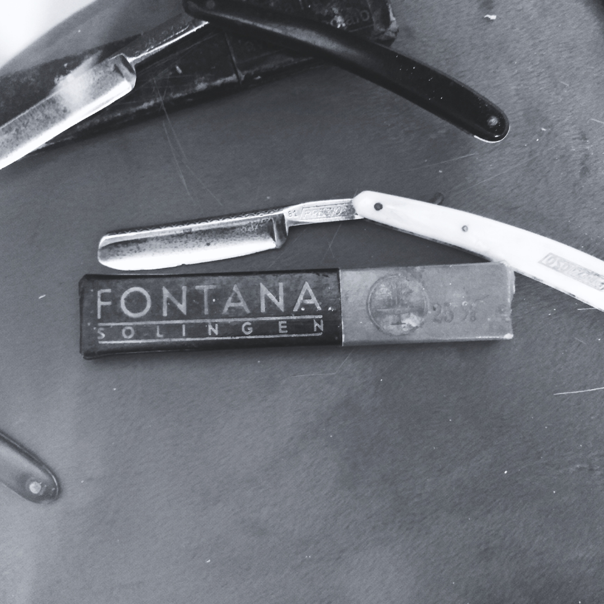
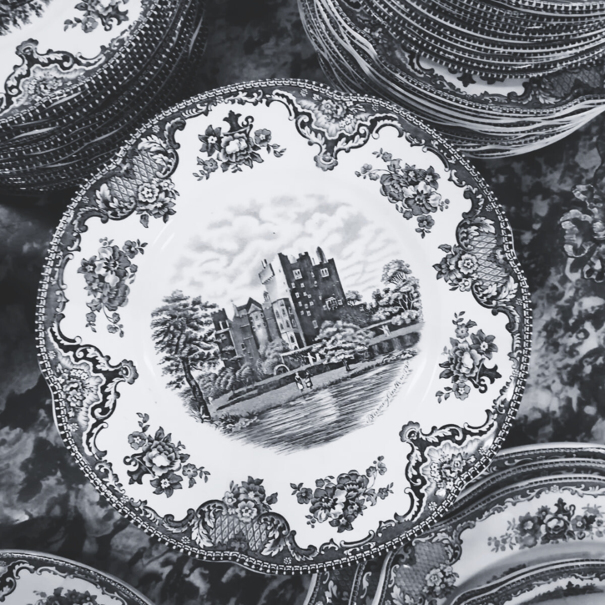
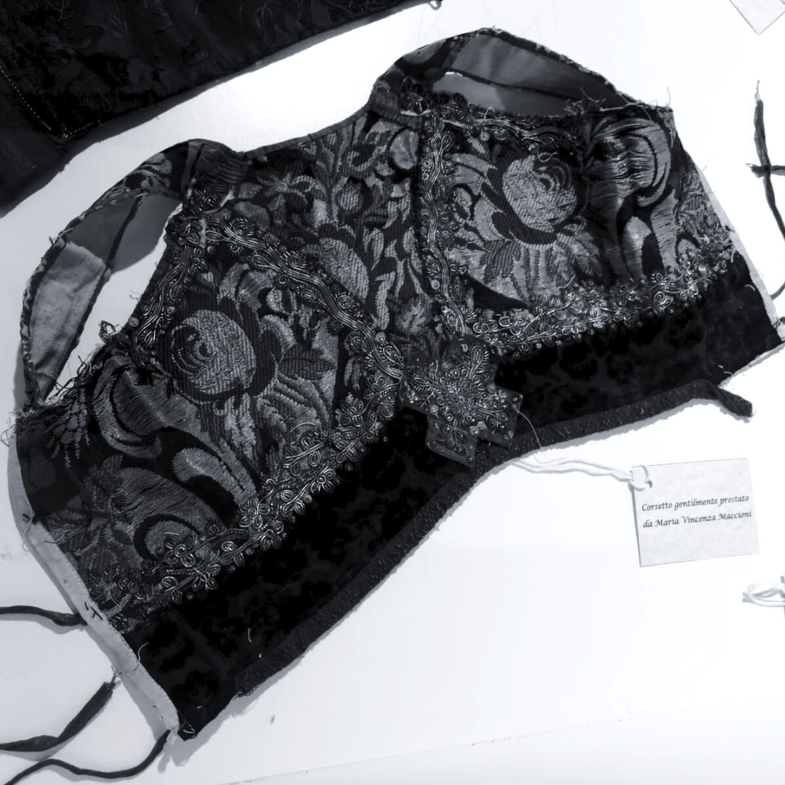
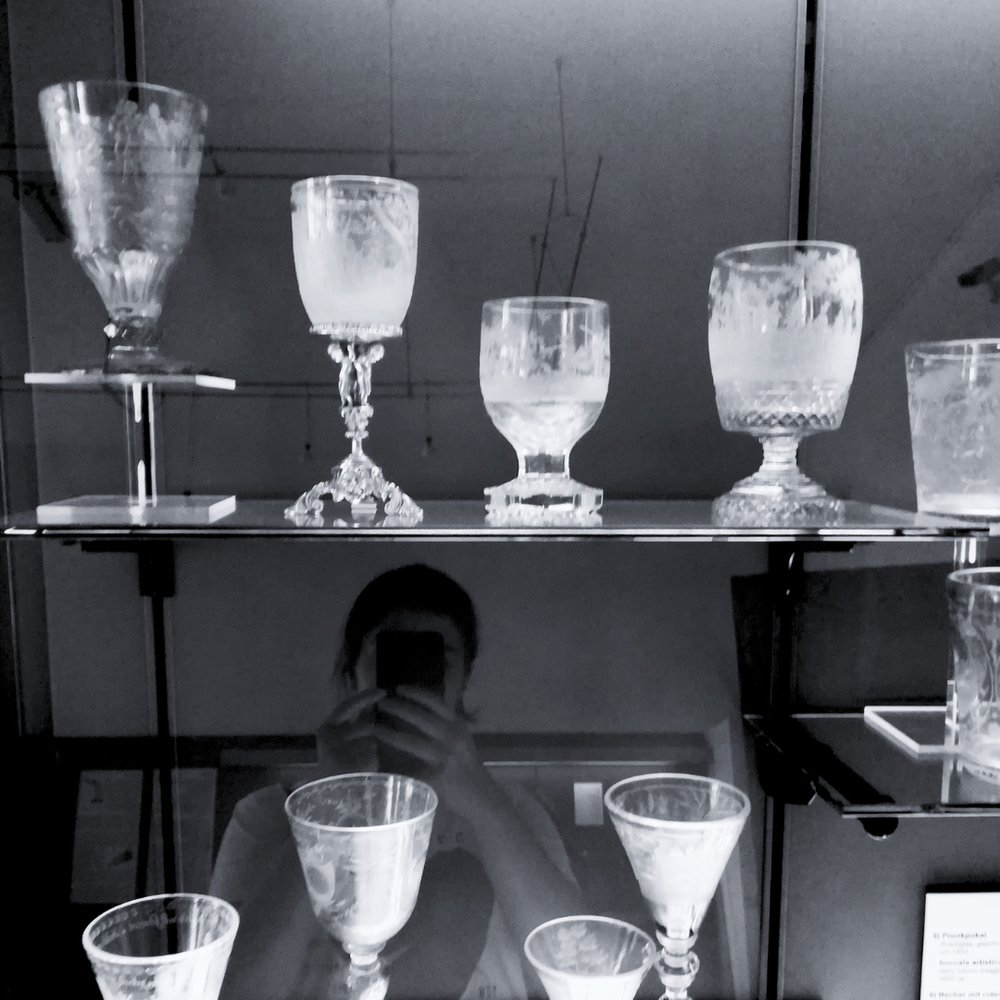
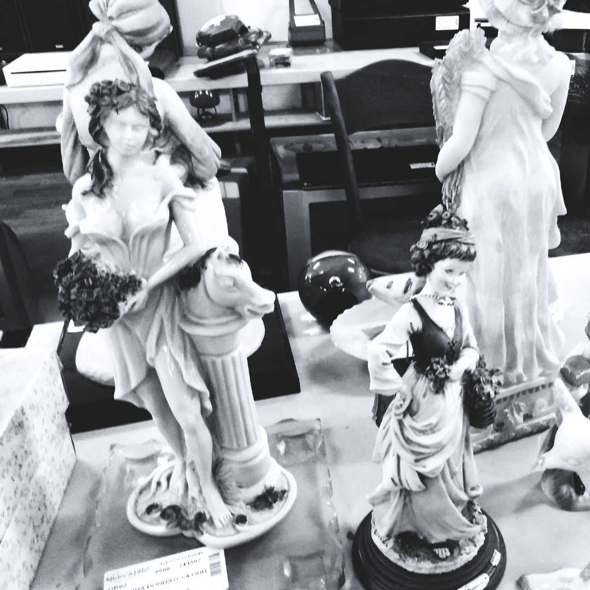
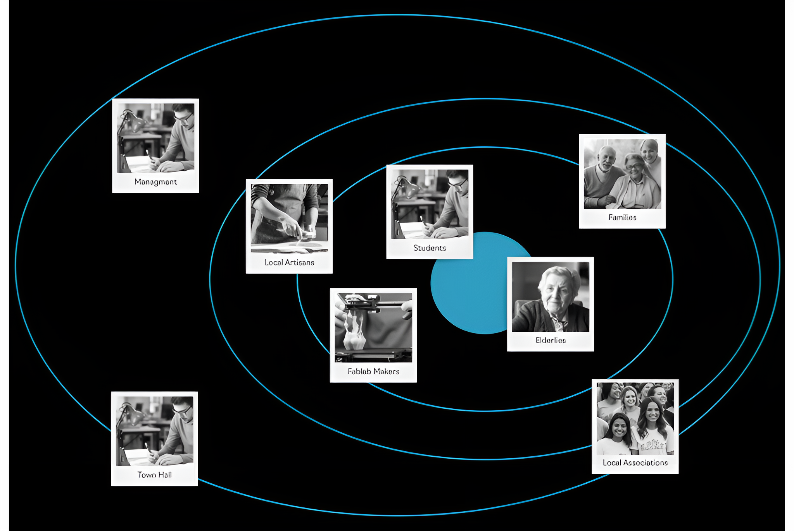

Where do you keep your sentimental objects?
Heirlooms have a space in our lives, while common objects with sentimental value but no economic one will get put aside, passing from flea market to landfill.
Are there people who bring them used and old materials to melt?
"Yes, usually old necklaces. I always try to use and appreciate these materials that go, and can be, reused. Often people wear jewellery that is ‘out of fashion’ and no longer feel like wearing it. They often come with jewellery that by manufacture is unique and valuable, so I recommend not to melt them. They are special objects, and even if maybe the person will never wear them I refuse to merge jewellery made with techniques or machinery that are no longer common and that are even no longer found.You can do whatever you like with it."
Who will inherit this?
Looking at the minerals her late husband brought from the mine in the 70s. "They have a card, everyone has their own card. I divided them, put them on the table, I tried to do equal parts. I made the notes with the names of my children, my granddaughter was there, I told her: ‘pull the notes’ and because of how she pulled the note put it there. I couldn't do otherwise. And now there are those who took them and those who didn't. “Leave them there mom, leave them there mom” and I wouldn’t want them to fight over two stones."





